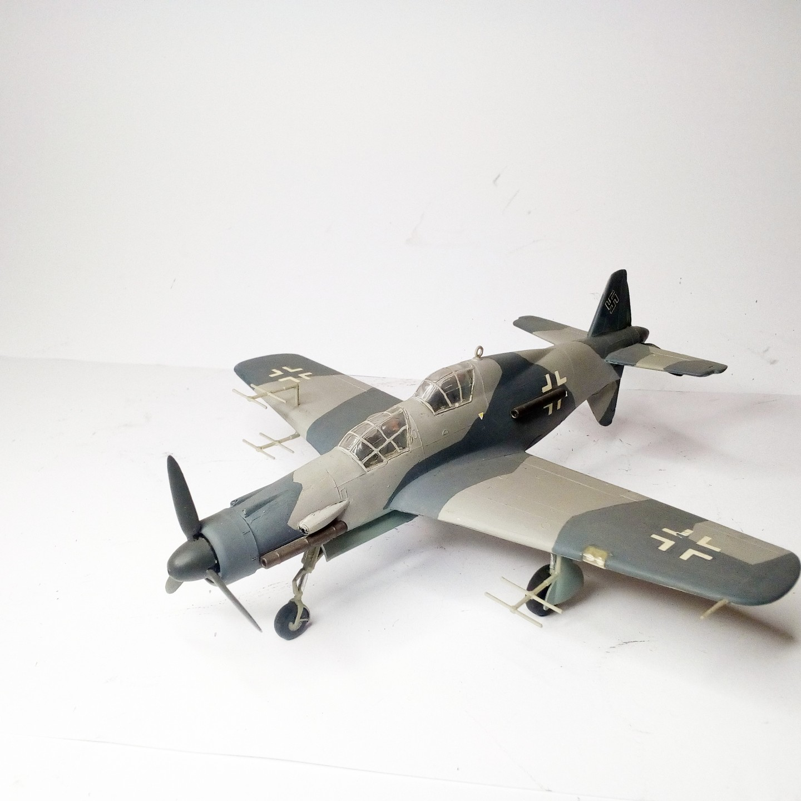
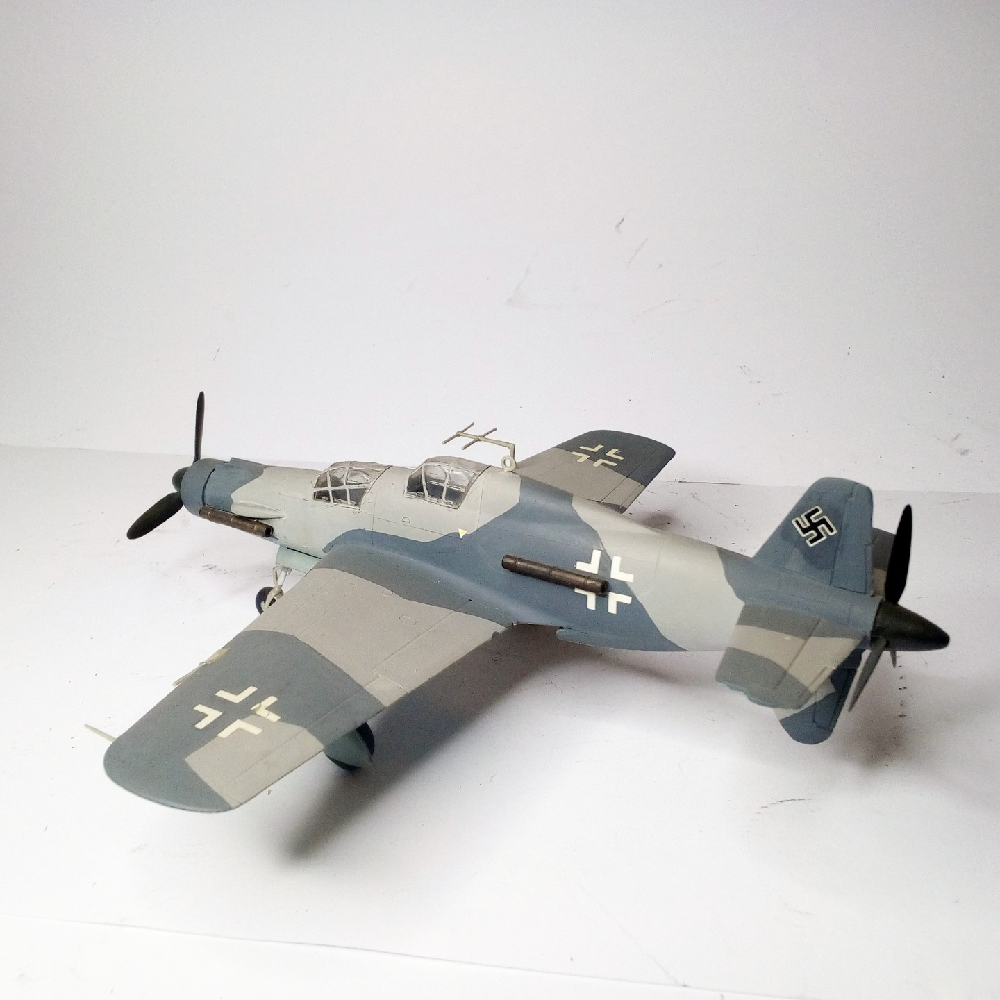

Aerei · scale model archive
Dornier Do335 B
Dornier Do335 B — Kit: Frog. Scale 1/72 Project of night fighter version of do 335, Good old Frog kit #1/72 #Frog

Photo gallery

English description
Scale 1/72
Project of night fighter version of do 335, Good old Frog kit
#1/72 #Frog
Descrizione italiana
Progetto di night figther versione di do 335, Buon vecchio Frog kit.